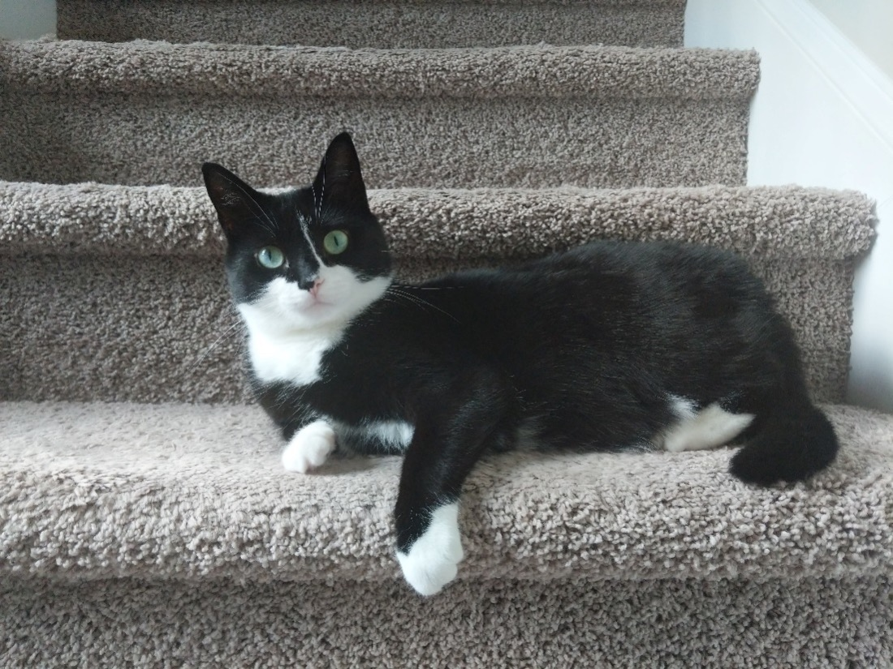
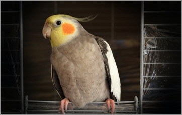

Mission Statement
Pets are nature’s gift to humanity. It has been scientifically proven
that opening our homes and hearts to a pet increases our
longevity and improves our overall quality of life as well as the lives of our pets. At Pet Paradigm Professionals, our mission is
to offer resources to help you care for your furry, scaly, feathery, and slimy loved ones. Our pet experts—or “Pexperts”—have
been working with pet owners and professionals alike for the past twelve years. They offer one-on-one consultations with current
and prospective pet owners as well as group presentations designed for veterinary, pet shelter, and pet breeding professionals.
Looking for basic pet care advice for the most common type of pets? Need additional help determining which type of pet is
ight for you and your family? We will work with you and provide tailored evidence-based pet care to ensure lifelong health and
wellness of your new companion.
Looking for your new best friend? The following organizations can help you find and adopt the perfect companion:


- General Adoption Resources: https://theshelterpetproject.org/
- ASPCA:https://www.aspca.org/
- Fish Rescue:: https://www.sterlingshelter.org/humane-society/koi-fish-rescue/
- Snake Rescue:https://savethesnakes.org/snakerescuecall/
- Bird Rescue: https://ftlob.rescuegroups.org/
We are also happy to help you navigate the adoption process! We will guide you through each step in the process from determining which type of pet is best suited for your family and home environment, to completing the necessary paperwork, to bringing your new loved one home. Please fill out our contact form to request a consultation. We will contact you within 48 hours to schedule a consultation. All fields are required.